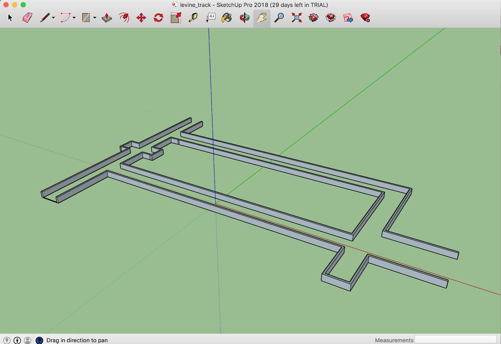

Simulation¶
Why would we want to use a simulator? We want to test the car’s algorithms in a controlled environment before we bring it into the real world so that we minimize risk of crashing. If you’ve ever had to fix a Traxxas RC car before, you might know that they can be a pain to fix. For instance, if a front steering servo plastic piece were to break, we would have to disassemble about 20 parts in order to replace it. The simulator will be our best friend for quite a while during development.
We will use the ROS Gazebo simulator software. From a high level, Gazebo loads a world as a .DAE file and loads the car. It has a physics engine that can determine when the car crashes into a wall.
First, ensure that you have setup your working directory as shown in the instructions here. Next, in the workspace folder, run:
$ source devel/setup.bash
$ roslaunch wall_following wall_following.launch
(What is this roslaunch command? See here. Syntax highlighting (section 5 of that page) also helps. Note that roslaunch will also start the ROS master node so you don’t need to run roscore separately)
You should see a rectangular-shaped track, this is the Levine Building 2nd floor hallways outside of the mLab. The robot spawns at the origin and is doing a simple left wall follow. If you have a Logitech F710 joystick on hand and want to try controlling the robot with the joystick, you can do that by pressing the LB button on the top left while moving the joypads.
Want a Different Track?¶
Other track files can be found in src/simulator/racecar-simulator/racecar_gazebo/worlds and have a .world extension.
To choose one of these tracks, open f110_ws/src/algorithms/wall_following/launch/wall_following.launch. Near the top of the file you will see
<arg name=”world_name” value=”track_levine”>
Change the value to the name of one of the track files, e.g.
<arg name=”world_name” value=”track_porto”>
Don’t Want the GUI?¶
If you are using the simulator to test some algorithms but don’t want to see the Gazebo GUI (because it’s heavy, or slow, or useless for now), you can disable it by editing the wall_following.launch file: in the <include …. racecar.launch> command, add this argument:
<arg name=”gui” value=”false”>
Moving the Car Manually in Simulation¶
Gazebo has a useful feature whereby you can move the car manually by clicking and dragging, thus over-riding whatever navigation algorithm it’s running. To translate the car, click on the crossing double-headed arrows on the top left of the simulation window (see below). Then grab the car with your pointer and move it. To rotate the car in place, click on the circular arrows; then grab the car and rotate it.

Creating a World¶
It can be really beneficial to create your own world. For instance, here in the mLab in Levine Building 2nd floor, it has been useful to create a .dae file that models that hallways to test our algorithms before taking the robot out into those exact hallways. We were able to obtain from the university architectural floor plans for the measurements, and also had to measure some things ourselves such as the inset of the office doors and the length of side hallways to elevator shafts.
A .dae COLLADA file is a file used to represent surfaces. Note the emphasis on surfaces, whereas normal .obj files represent actual objects. We use Sketchup software because it is about as easy as it gets to create simple 3D models. If you want to try more advanced 3D modeling tools, feel free to try out software like 3DS Max, Solid Works, etc. In Google Sketchup, we draw rectangles to simulate the walls, and then pull them upwards to some height. Note that in Google Sketchup it is best to set the unit to meters since ROS does things in meters, not feet. Further note that we purposely did not create a ground in the world because Gazebo would treat it as collision physics and weird physics things occur. Instead, in our .world file in ROS, we will insert a Gazebo ground. Export your model with just the walls.
We had to experiment with different export settings for Sketchup. These are the checkboxes that worked best in Gazebo. The only 3 checked boxes are “Export Two-Sided Faces”, “Triangulate All Faces”, and “Preserve Component Hierarchies.” When we used different settings, such as including edges or hidden geometry, weird things would happen where the car would see invisible walls.
Once you’ve exported the .dae file, you will need to go into 3 folders in order to add the world.
Navigate to f110_ws/src/simulator/racecar-simulator" folders. You should then see folders “racecar_description” and “racecar_gazebo.” Inside racecar_gazebo/worlds create a new [track_name].world file. You can copy and paste another world to use as a template. Update all references to the new track name.
Furthermore, inside of the racecar_description folder, you will need to update files within /meshes and /models. Inside racecar_description/models you will want to make a new folder with your track name (e.g. “levine_track”) with a model.config file and model.sdf file. If you copy and paste a template from an existing track, the steps will be pretty self explanatory in terms of updating the track names to your new track name.
Inside racecar_description/meshes you will copy in your .dae file.
Now that you’ve created your .dae file with Sketchup and added it into the code, lastly you will want to update your launch file in order to use your new world. Follow instructions from the Gazebo Simulator section to update the launch file with your world name. Launch the world and you should see your world come up.